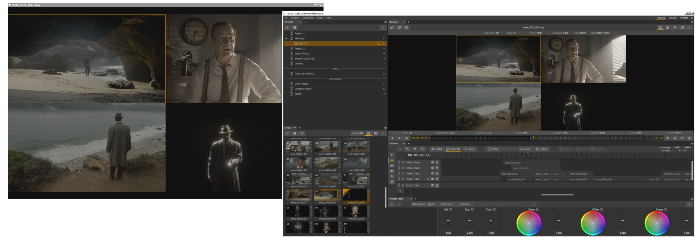
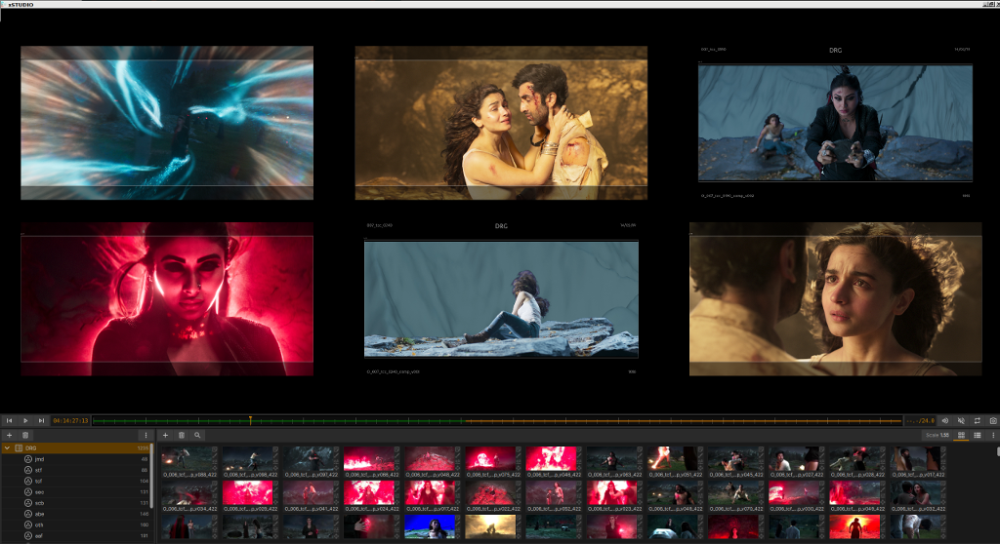

Introduction
{kind=link}

xSTUDIO Dual Window Interface
What is xSTUDIO?
xSTUDIOは、映画やテレビのポストプロダクション業界、特にビジュアルエフェクト(VFX)や長編アニメーション分野で働くプロフェッショナルのために設計された、メディア再生およびレビュー用アプリケーションです。xSTUDIOは、直感的で使いやすいインターフェースを提供することに注力しており、その中核には高性能な再生エンジンを備えています。さらに、パイプラインへの統合やカスタマイズを完全に自由に行えるよう、C++およびPythonのAPIが用意されています。本アプリケーションは、MacOS(Apple)、Microsoft Windows、および多くの主要なLinuxデスクトップディストリビューションに対応しています。
xSTUDIOは、非常に大規模なメディアソースのコレクションを迅速にインポートして処理できるように最適化されており、専門的な画像フォーマットの読み込みや、正確なカラーマネジメントによる画像表示が可能です。ユーザーはメディアを素早くインポート、整理、グループ化してプレイリストや「サブセット」を作成でき、メディアアイテムの再生やループ再生、レビューノートの追加、スケッチによる注釈(アノテーション)の描き込みを行うことで、非常にインタラクティブかつ協調的な方法でメディアを確認できます。ノンリニア編集(NLE)のタイムラインインターフェースにより、ユーザーはマルチトラックのビデオおよびオーディオ編集を迅速かつ簡単に作成、インポート、エクスポートできます。これにより、VFX、アニメーション、その他のポストプロダクション業務に携わるチームにとって不可欠なワークフローが実現します。メンバーは、自身や同僚が制作しているアートワークを、個別のメディアアイテムとして、あるいはシーケンス編集の流れ(文脈)の中で、必要に応じてオンデマンドで確認することができます。例えば、表示しているメディアソースを瞬時に切り替える、画素(ピクセル)を拡大して詳細に検査する、複数のメディアソース間でフレーム単位の比較を行う、図形やキャプションでメディアに注釈を付ける、共有用のフィードバックノートを追加する、といった操作が可能です。
xSTUDIO v1.X - Overview
xSTUDIOは、堅牢で高性能な再生およびレビュー用ソリューションです。DNEGでは2022年9月から導入されており、デイリー(試写)や画像レビューを行うために、世界中のグローバルチームに所属する数千人ものVFX・アニメーションアーティスト、スーパーバイザー、プロデューサーによって日々使用されています。本アプリケーションは、DNEGの多種多様な大規模クルーからのインプットやフィードバックのおかげで開発・拡張されてきました。そのため、xSTUDIOはまさに「VFXやアニメーションのプロフェッショナルのために、プロフェッショナルによって作られた製品」となっています。
xSTUDIOの機能とパフォーマンスに関する主なハイライト(特徴)は以下の通りです。
The Interface
アプリケーションのインターフェースは柔軟性が高く、自由な構成が可能です。
自身の視覚的な好みやワークフローに合わせて、外観やコンポーネントを設定できます。
レイアウト(Layouts)機能により、複数のインターフェース構成を作成し、作業しながらシームレスに切り替えることができます。
UIの多くのコンポーネントは表示・非表示を切り替えられます: - アプリケーションを「クリーン」で最小限の外観にすることも… - …あるいは、機能や情報が凝縮されたインターフェースにすることも… - …その中間のあらゆる状態に設定することも可能です。
Loading Media
今日一般的に使用されている実質的にすべての画像フォーマット(EXR、TIF、JPG、MOV、MP4など)を表示できます。
デスクトップのファイルシステムブラウザから、xSTUDIOのインターフェースへ直接メディアをドラッグ＆ドロップできます。
コマンドラインインターフェース(CLI)を使用して、ターミナルウィンドウから実行中のxSTUDIOインスタンスへメディアを「プッシュ」できます。
Python APIを使用して、独自のカスタムスクリプトでプレイリストを構築できます。
Playlists
任意の数のプレイリストを作成し、カラーコードを設定して、カテゴリヘッダーの下に整理できます。
ドラッグ＆ドロップでメディアやプレイリストの順序を並べ替え、整理できます。
「フラグ」機能を使用して、個々のメディアやプレイリストにカラーコードを設定できます。
親プレイリストの下にミニプレイリストのサブセットをネスト(階層化)し、表示対象をさらに構造化できます。
親プレイリストの下にコンタクトシートを作成し、複数のメディアアイテムをグリッド状に配置して比較できます。
Sequences
プレイリストからタイムラインインターフェースへメディアをドラッグ＆ドロップすることで、マルチトラックのビデオタイムラインを作成できます。
シンプルで使いやすい編集ツールを使用して、タイムラインを編集できます。
OpenTimelineIO互換機能(インポート/エクスポート機能)を使用して、タイムラインの読み込みと書き出しが行えます。
「フォーカス」モードやアイテムのループ再生など、レビューに最適なタイムラインツールを使用することで、シーケンスベースのレビューを迅速かつ簡単に行えます。
Notes
個々のフレームまたは特定のフレーム範囲のメディアに対して、ノートや注釈(アノテーション)を追加できます。
画面上の注釈は、使いやすくレスポンスの非常に高いスケッチツールで作成できます。現在利用可能な注釈機能は以下の通りです：
- ブラシストロークの色、不透明度、サイズの調整
- ボックス、円、直線、矢印などのシェイプ(図形)ツール
- さらに柔軟なスケッチを可能にする消しゴムペン
- 位置、スケール、色、不透明度を調整できる編集可能なテキストキャプション
- 注釈をjpegやtiffなどの画像としてディスクに保存できる「スナップショット」ボタン
ノートインターフェースを介して、ブックマークされたフレームに直接ジャンプし、メディアコレクション内をナビゲートできます。

xSTUDIO’s Contact Sheet viewer mode
The Viewer
正確な色再現による表示(OCIO v2カラーマネジメント)。
ホットキー(ショートカットキー)駆動による操作。
露出(エキスポージャー)および再生レートの調整。
画像のズーム/パンツール、RGBAチャンネル表示。
画像スタックを比較できる複数の「比較モード(Compare Modes)」:
- - 複数ソースをタイル状に配置するグリッドモード(Grid Mode)
- - A/B比較＆ワイプ比較(Wipe Compare)
- - コンポジット(合成)モード(Over、Screen、Addなど)
- - ストリングアウト(String Out)モード: 多くのソースを1つのフラットな編集リストに動的に結合
調整可能なマスキングオーバーレイとガイドライン。
デュアルディスプレイ環境用の「ポップアウト」セカンドビューアー。
オーディオストリームが埋め込まれたソースの音声再生。
- Other Capabilities
グレーディングツールを使用して、カットやレンダリング画像にクリエイティブなグレーディングを適用できます。
- - グレーディングは、編集可能なポリゴン(多角形)シェイプでマスクすることが可能
- - グレーディングマスクの境界をぼかす(ソフトにする)ことが可能
- - シンプルなコピー＆ペースト操作で、グレーディングをNukeにエクスポート可能
個々のメディアアイテムを瞬時に確認できるクイックビュー(QuickView)
- - xSTUDIOの実行中にコマンドラインから呼び出すことで、独立した軽量プレイヤーウィンドウをポップアウトさせ、単一のメディアを個別に表示・確認できます。
API features for pipeline developers
C++ API
必要に応じて、アプリケーションの最下層の内部コンポーネントにまで完全アクセスできるプラグインを記述できます。
一般的なプラグインタイプを実装するために、C++のベースクラスが提供されています：
- - ビデオ出力プラグイン(Video Output Plugin) - SDIビデオカードなど、アプリケーション外部へのビデオ出力や、ディスクへのレンダリング、ビデオコンテンツのストリーミング用
- - ビューポートオーバーレイプラグイン(Viewport Overlay Plugin) - ビューポート内にカスタムグラフィックス、テキスト、データを直接描画用
- - カラーパイプラインプラグイン(Colour Pipeline Plugin) - カラーマネジメントの実装用
- - メディアリーダープラグイン(Media Reader Plugin) - 特定のファイルフォーマット用リーダーの実装用
- - データソースプラグイン(Data Source Plugin) - プロダクションデータベースと連携し、xSTUDIOにインポートするソースメディアを取得するプラグインの構築用
- - メタデータフックプラグイン(Metadata Hook Plugin) - メディア作成時にパイプラインのメタデータを追加用
Shotgrid REST APIを活用した、DNEGの強力なShotgridブラウザインターフェースのコードも参考用として含まれています。これはDNEG独自のShotgridテーブルスキーマ向けに記述されているため、そのままでは動作しませんが、開発者は必要に応じて他のスタジオで動作するようにコードを適応させることができます。
Python API
以下を実行できるPythonプラグインを作成できます：
- - メニューやその他任意のGUI要素の提供
- - メディアの追加や並べ替えによる、xSTUDIOセッションとのインタラクション
- - 画面上へのオーバーレイグラフィックスの追加
- - 再生中におけるイベント通知の受信
Python APIを介して、別のプロセスからxSTUDIOインスタンスへ透過的に接続できます。これにより、xSTUDIOをアプリケーションとは別のソフトウェア環境で実行し、APIを通じて制御することが可能になります。
xSTUDIO内でスクリプトを実行するための組み込みPythonインタプリタも利用可能です。これはUIとは別のスレッドで実行されるため、Pythonの実行がGUIの操作性や再生に影響を与えることはありません。
わかりやすいAPIメソッドを使用して、メディアプレイリストを作成・構築できます。
「プレイヘッド(再生ヘッド)」にアクセスして、再生を制御(スタート、ストップ、フレーム送り、位置ジャンプなど)できます。
開発者がすぐに作業を開始できるよう、APIドキュメントに加えて、さまざまなデモ用Pythonプラグインやスクリプトが提供されています。